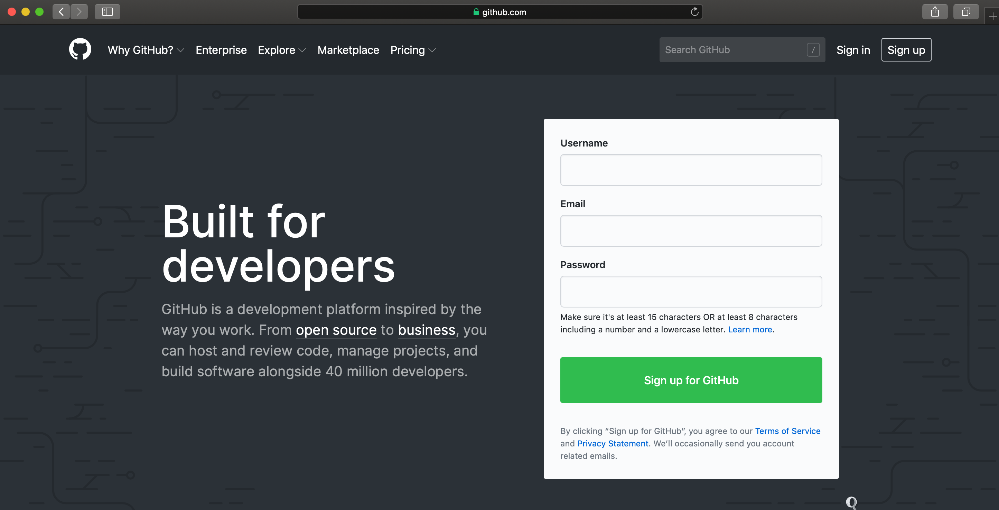

#### Preambule ####
# Doel: Lees de gegevens van de Australische verkiezingen van 2022 in en maak een
# grafiek van het aantal zetels dat elke partij won.
# Auteur: Harrie Jonkman
# E-mail: harriejonkman@xs4all.nl
# Datum: 6 oktober 2022
# Voorwaarden: Je moet weten waar je Australische verkiezingsgegevens kunt krijgen.
Inleiding
Soms zijn er van die boeken die een goed overzicht geven van de stand van zaken in moderne data analyse en die je jonge mensen zou aanraden om te lezen en te gebruiken. Natuurlijk is het R for Data Science-boek van Wickham en Grolemund [@r4ds] zo’n boek. Irizarry’s Introduction to Data Science [@Introdatas] is ook zo’n boek. Zelf vind ik R for Health Data Science van Harrison and Pius [@RforHealth] een mooi, kort en krachtig leerboek. Omdat er zoveel gebeurt op dit terrein, zijn dit soort boeken al snel niet meer helemaal up-to-date. Niet dat je daar teveel van aan moet trekken; goede boeken blijven ook op dit terrein hun waarde vasthouden. Aan introductieboeken moderne dataanalyse moest ik denken toen ik onlangs Telling Stories With Data van Rohan Alexander [@Tellingstories] las. Dat vind ik een heel goed eigentijds boek over moderne data analyse dat ook in dit rijtje opgenomen kan worden. Als je tweede helft 2022 jonge mensen hierover iets wilt leren, is dit boek heel aantrekkelijk. Rowan Alexander laat je zien wat je kunt doen met data en biedt een goede onderbouwing van hoe je met data en de kennis om kunt gaan. Het is heel uitgebreid en soms allicht net wat te lang omdat Alexander zo op details ingaat.
Het boek bestaat uit vier delen. In het eerste deel wordt de basis gelegd; je moet verhalen willen vertellen met data. Daarom is het ook zo belangrijk dat je de de componenten van de workflow voor ogen houdt: plannen (bedenk goed waar je heel wilt), simuleren (let bij die voorbereiding op de details), verkrijgen (zorg voor een dataset waar je mee kunt werken), exploreren (beschrijf en modelleer) en delen (communiceer de resultaten die je gevonden hebt en wijs op zwakheden en sterkten van de benadering). In dit deel laat Alexander ook zien hoe R werkt, hoe je met reproduceerbaar onderzoek om moet gaan en ook wat het belang ervan is.
Nadat Alexander het raamwerk gelegd heeft gaat hij, vreemd genoeg, in op communicatie. Ik zou dit verderop in het boek hebben geplaatst, maar in dit deel gaat hij in op schrijven over onderzoek, waar je daarbij op moet letten en hoe data daarin een rol spelen. Dan is er nog statische communicatie en hoe we de lezer door grafieken en tabellen een gevoel geven bij de dataset. Dit deel gaat ook over interactieve communicatie, over websites, interactieve kaarten en apps waarmee de onderzoeker meer en meer zijn verhaal kan doen.
In het derde deel acquisitie gaat hij weer terug en vraagt hij zich af Eigen data maar ook census data moeten aan bepaalde eisen voldoen en als een boer land- en tuinbouwproducten teelt, moet een onderzoeker met z’n data omgaan. Waar je aan kunt denken, laat Alexander zien. Soms moeten we we ook data verkrijgen, die op allerlei api’s of andere vormen van dataopslag staan. Weer in andere gevallen moeten we zelf op jacht naar de data, bv. via experimentele onderzoeken.
Het vierde deel gaat over voorbereiding. Denk daarbij aan het opschonen en prepareren van datasets. Grote delen van de tijd van onderzoekers wordt aan dit deel van het werk besteed en Alexander geeft je hierbij verschillende suggesties en voorbeelden mee. Een groot deel van dit werk wordt natuurlijk met tidyverse en janitor gedaan. Bij voorbereiding gaat het ook om opslaan en deel. Data moeten te vinden, toegankelijk, van verschillende kanten mee te werken en herbruikbaar zijn. Denk hier vanaf het begin over na. Via GitHub kun je niet alleen op een goede manier de gegevens en codes opslaan maar zo kun je ook de analyses en de uiteindelijke resultaten delen. Niet alleen binnen de onderzoeksgroep, ook met de buitenwereld. Dit alles heeft niet alleen met het vraagstuk van veiligheid maar ook met vraagstuk van efficiëntie te maken.
Het vijfde uitgebreide hoofdstuk gaat over modelleren. Uiteraard gaat hij in op exploratieve data analyse waarmee de variabelen zelf begrijpen, eenvoudige relaties met andere variabelen en wat we aan gegevens missen. Daarna gaat hij verder met hoe je lineaire modellen uitvoert, omgaat met causaliteit in observationele data. Maar hij gaat ook in op ingewikkelde data analyse zoals multilevel analyse en tekstanalyse.
Alexander sluit af met enkele concluderende opmerkingen die in de richting gaan van dat data analyse zich verder zal als discipline en dat we betere verhalen over de wereld kunnen vertellen. Deze opmerkingen verdienen niet heel veel aandacht nu. Alexander had hier zelf meer aandacht aan moeten besteden. Maar ik wil optimistisch afsluiten omdat het bij elkaar toch een heel leerzaam boek geworden is waarmee je leert hoe je tegenwoordig moderne data-analyse uitvoert, met R en RStudio, met bepaalde pakketten, maar ook GitHub en Quarto dat nog maar kort op de markt is. Het gaat om statistiek en om computerwetenschappen. Centraal staan reproduceerbaarheid, workflows en respect (veiligheid, privacy). Lees het boek, zou ik zeggen en probeer en analyseer met hem mee. Alle codes staan op internet hier.
Als je een idee wilt krijgen van het boek, hieronder heb ik een deel uit het tweede hoofdstuk gehad. In dat hoofdstuk laat hij aan de hand van enkele voorbeelden zien, wat je in het boek kunt verwachten. Een voorbeeld is onderzoek naar de recente Australische verkiezingen.
Australische verkiezingen
Australië is een parlementaire democratie met 151 zetels in het Huis van Afgevaardigden, het lagerhuis waaruit de regering wordt gevormd. Er zijn twee grote partijen – “Liberal” en “Labor” – twee kleinere partijen – “Nationals” en “Greens” – en vele kleinere partijen en onafhankelijken. Hieronder maken we een grafiek van het aantal zetels dat elke partij won in de federale verkiezingen van 2022.
Plan
Voor dit voorbeeld moeten we twee aspecten plannen. Het eerste is hoe de dataset die we nodig hebben eruit zal zien en het tweede is hoe de uiteindelijke grafiek eruit zal zien.
De basisvereiste voor de dataset is dat deze in ieder geval de naam van de zetel (in Australië soms “divisie” genoemd) en de partij van de gekozene bevat. Een snelle schets van de dataset die we nodig hebben, zou er dus als volgt uit kunnen zien Figure 1 (a).
We moeten ook een plan maken voor de grafiek waarin we geïnteresseerd zijn. Aangezien we het aantal zetels willen weergeven dat elke partij won, is een snelle schets van waar we naar zouden kunnen streven Figure 1 (b).
Simuleren
We simuleren nu wat gegevens, om onze schetsen wat specifieker te maken.
Om te beginnen maakt u in RStudio een nieuw Quarto-document (“Bestand” -> “Nieuw bestand” -> “Quarto-document…”). Geef het een titel, zoals “verkenning_australische verkiezingen_2022”, en voeg uw naam toe als auteur. Laat de andere opties als standaard, en klik dan op “Create”. Voor dit voorbeeld zetten we alles in dit ene Quarto-document. U moet het opslaan als “australische_elections.verkiezingen” (“File” -> “Save As…”).
Verwijder bijna alle standaard inhoud en maak dan onder het titelmateriaal een nieuwe R code chunk (“Code” -> “Insert Chunk”) en voeg preambule documentatie toe die uitlegt:
- het doel van het document;
- de auteur en contactgegevens
- wanneer het bestand is geschreven of voor het laatst is bijgewerkt; en
- randvoorwaarden waarop het bestand is gebaseerd.
In R zijn regels die beginnen met “#” commentaar. Dit betekent dat ze door R niet als code worden uitgevoerd, maar bedoeld zijn om door mensen te worden gelezen. Elke regel van deze preambule moet beginnen met een “". Maak ook duidelijk dat dit de preambule is door er”####” omheen te zetten. Het resultaat moet er als volgt uitzien Figure 2.
Hierna moeten we de werkruimte instellen. Hiervoor moeten alle benodigde pakketten worden geïnstalleerd en geladen. Een pakket hoeft maar één keer per computer geïnstalleerd te worden, maar moet elke keer dat het gebruikt wordt, moet het geladen worden. In dit geval gaan we tidyverse [@Wickham2017], en janitor [@janitor] gebruiken. Ze moeten worden geïnstalleerd omdat dit de eerste keer is dat ze worden gebruikt, en daarna moeten ze elk worden geladen.
Hieronder volgt een voorbeeld van de installatie van de pakketten (er is overdreven veel commentaar toegevoegd om duidelijk te maken wat er gebeurt; in het algemeen is dit niveau van commentaar onnodig). Voer deze code uit door te klikken op de kleine groene pijl bij de R-code chunk (Figure 3). Ikzelf doe dit met het pakket packman waarmee het pakket alleen wordt geïnstalleerd als je het nog niet hebt (Pacman moet wel geïnstalleerd zijn)
library(pacman)
p_load(tidyverse, janitor)Nu de pakketten zijn geïnstalleerd, moeten ze worden geladen. Aangezien die installatiestap maar één keer per computer hoeft te gebeuren, kan die code worden uitgecommentarieerd zodat hij niet per ongeluk wordt uitgevoerd.
#### Workspace opzet ####
# install.packages("tidyverse") # Dit hoef je maar een keer te doen
# install.packages("janitor") # idem
library(tidyverse) # Een verzameling pakketten voor data-verwerking
library(janitor) # Om datasets op te schonenWe kunnen het hele document renderen door op “Renderen” te klikken. Wanneer u dit doet, kan u gevraagd worden om enkele pakketten te installeren. Als dat gebeurt, moet u daarmee instemmen. Dit zal resulteren in een HTML-document.
Voor een inleiding op de pakketten die zojuist zijn geïnstalleerd, bevat elk pakket een helpbestand met informatie erover en hun functies. Het kan worden geopend door een vraagteken voor de pakketnaam te zetten en dan die code in de console uit te voeren. Bijvoorbeeld ?tidyverse.
Om onze gegevens te simuleren, moeten we een dataset maken met twee kolommen: “Divisie” en “partij”, en een aantal waarden voor elke kolom. In het geval van “Division” zijn redelijke waarden een naam van een van de 151 Australische divisies. In het geval van “partij” zijn redelijke waarden een van de volgende vijf: “Liberal”, “Labor”, “National”, “Green”, “Other”. Ook deze code kan worden uitgevoerd door te klikken op de kleine groene pijl bij de R-codebrok.
simulated_data <-
tibble(
# Gebruik 1 tm 151 voor elke 'divisie
"Division" = 1:151,
# Randomly van een van de vijf opties, met replacement, 151 keer
"Party" = sample(
x = c(
"Liberal",
"Labor",
"National",
"Green",
"Other"
),
size = 151,
replace = TRUE
)
)
simulated_data# A tibble: 151 x 2
Division Party
<int> <chr>
1 1 Other
2 2 National
3 3 Labor
4 4 Other
5 5 Labor
6 6 Green
7 7 National
8 8 Other
9 9 Labor
10 10 Other
# ... with 141 more rowsOp een gegeven moment zal je code niet meer werken en zul je anderen om hulp willen vragen. Maak geen screenshot van een klein stukje code en verwacht niet dat iemand op basis daarvan kan helpen. Dat kunnen ze vrijwel zeker niet. In plaats daarvan moet je ze je hele script geven op een manier die ze kunnen uitvoeren. Over GitHub wordt later in zijn boek geschreven ?@sec-reproducible-workflows, maar voor nu, als je hulp nodig hebt, moet je een GitHub account aanmaken, waarmee je je code kunt delen op een manier die nuttiger is dan het maken van een screenshot. Ga daarvoor naar GitHub (Figure 4 (a)). Nadenken over een geschikte gebruikersnaam is belangrijk omdat dit onderdeel wordt van je professionele profiel. Het zou dus zinvol zijn om een gebruikersnaam te hebben die professioneel is, onafhankelijk van een cursus, en idealiter gerelateerd aan je echte naam. Zoek dan naar een “+” in de rechterbovenhoek, en selecteer dan “New gist”.

Vanaf hier moet je alle code aan die gist toevoegen, niet alleen het laatste stukje dat een fout geeft. En geef het een betekenisvolle bestandsnaam met “.R” aan het einde, bijvoorbeeld “australische_verkiezingen.R”.
Klik op “Create public gist”. We kunnen dan de URL naar deze Gist delen met wie we vragen om te helpen, uitleggen wat het probleem is, en wat we proberen te bereiken. Het zal veel gemakkelijker zijn om te helpen, omdat alle code beschikbaar is.
Verkrijgen
Nu willen we de feitelijke gegevens hebben. De gegevens die we nodig hebben zijn van de ‘Australian Electoral Commission’ (AEC), het niet-partijgebonden bureau dat de Australische federale verkiezingen organiseert. We kunnen een pagina van hun website doorgeven aan read_csv() van readr [@citereadr]. We hoeven readr niet expliciet te laden omdat het deel uitmaakt van het tidyverse. De <- of “assignment operator” wijst de uitvoer van read_csv() toe aan een object genaamd “raw_elections_data”.
#### Data inlezen ####
raw_elections_data <-
read_csv(
file =
"https://results.aec.gov.au/27966/website/Downloads/HouseMembersElectedDownload-27966.csv",
show_col_types = FALSE,
skip = 1
)
# We hebben de gegevens van de AEC website gelezen. We willen het misschien bewaren
# voor het geval er iets gebeurt of ze het verplaatsen.
write_csv(
x = raw_elections_data,
file = "australian_voting.csv"
)We kunnen de dataset snel bekijken met head() die de eerste zes rijen toont, en tail() die de laatste zes rijen toont.
head(raw_elections_data)# A tibble: 6 x 8
DivisionID DivisionNm StateAb CandidateID GivenNm Surname PartyNm PartyAb
<dbl> <chr> <chr> <dbl> <chr> <chr> <chr> <chr>
1 179 Adelaide SA 36973 Steve GEORGANAS Austral~ ALP
2 197 Aston VIC 36704 Alan TUDGE Liberal LP
3 198 Ballarat VIC 36409 Catherine KING Austral~ ALP
4 103 Banks NSW 37018 David COLEMAN Liberal LP
5 180 Barker SA 37083 Tony PASIN Liberal LP
6 104 Barton NSW 36820 Linda BURNEY Austral~ ALP tail(raw_elections_data)# A tibble: 6 x 8
DivisionID DivisionNm StateAb CandidateID GivenNm Surname PartyNm PartyAb
<dbl> <chr> <chr> <dbl> <chr> <chr> <chr> <chr>
1 152 Wentworth NSW 37451 Allegra SPENDER Indepen~ IND
2 153 Werriwa NSW 36810 Anne Maree STANLEY Austral~ ALP
3 150 Whitlam NSW 36811 Stephen JONES Austral~ ALP
4 178 Wide Bay QLD 37506 Llew O'BRIEN Liberal~ LNP
5 234 Wills VIC 36452 Peter KHALIL Austral~ ALP
6 316 Wright QLD 37500 Scott BUCHHOLZ Liberal~ LNP We moeten de gegevens opschonen zodat we ze kunnen gebruiken. We proberen ze te laten lijken op de dataset die we in de planningsfase voor ogen hadden. Hoewel het prima is om van het plan af te wijken, moet dit een weloverwogen, beredeneerde beslissing zijn. Na het inlezen van de dataset die we hebben opgeslagen, zullen we eerst de namen van de variabelen aanpassen. Dit doen we met clean_names() uit janitor [@janitor].
#### Basic opschonen ####
raw_elections_data <-
read_csv(
file = "australian_voting.csv",
show_col_types = FALSE
)# Maak de namen makkelijker om te typen
cleaned_elections_data <-
clean_names(raw_elections_data)
# Have a look at the first six rows
head(cleaned_elections_data)# A tibble: 6 x 8
division_id division_nm state_ab candidate_id given_nm surname party~1 party~2
<dbl> <chr> <chr> <dbl> <chr> <chr> <chr> <chr>
1 179 Adelaide SA 36973 Steve GEORGA~ Austra~ ALP
2 197 Aston VIC 36704 Alan TUDGE Liberal LP
3 198 Ballarat VIC 36409 Catheri~ KING Austra~ ALP
4 103 Banks NSW 37018 David COLEMAN Liberal LP
5 180 Barker SA 37083 Tony PASIN Liberal LP
6 104 Barton NSW 36820 Linda BURNEY Austra~ ALP
# ... with abbreviated variable names 1: party_nm, 2: party_abDe namen zijn sneller te typen omdat RStudio ze automatisch aanvult. Daartoe beginnen we de naam van een kolom te typen en gebruiken dan “tab” om hem aan te vullen.
Er zijn veel kolommen in de dataset, en wij zijn voornamelijk geïnteresseerd in twee: “division_nm”, en “party_nm”. We kunnen bepaalde interessante kolommen kiezen met select() uit dplyr [@citedplyr] die we geladen hebben als onderdeel van de tidyverse. De “pipe operator”, |>, zet de uitvoer van een regel om in de eerste invoer van de functie op de volgende regel.
cleaned_elections_data <-
cleaned_elections_data |>
# Select only certain columns
select(
division_nm,
party_nm
)
# Even naar de eerste zes rijen kijken
head(cleaned_elections_data)# A tibble: 6 x 2
division_nm party_nm
<chr> <chr>
1 Adelaide Australian Labor Party
2 Aston Liberal
3 Ballarat Australian Labor Party
4 Banks Liberal
5 Barker Liberal
6 Barton Australian Labor PartySommige namen van de kolommen zijn nog steeds niet duidelijk omdat ze afgekort zijn. We kunnen de namen van de kolommen in deze dataset bekijken met names(). En we kunnen de namen wijzigen met rename() van dplyr [@citedplyr].
names(cleaned_elections_data)[1] "division_nm" "party_nm" cleaned_elections_data <-
cleaned_elections_data |>
rename(
division = division_nm,
elected_party = party_nm
)
head(cleaned_elections_data)# A tibble: 6 x 2
division elected_party
<chr> <chr>
1 Adelaide Australian Labor Party
2 Aston Liberal
3 Ballarat Australian Labor Party
4 Banks Liberal
5 Barker Liberal
6 Barton Australian Labor PartyWe kunnen nu kijken naar de unieke waarden in de kolom “elected_party” met behulp van unique().
cleaned_elections_data$elected_party |>
unique()[1] "Australian Labor Party"
[2] "Liberal"
[3] "Liberal National Party of Queensland"
[4] "The Greens"
[5] "The Nationals"
[6] "Independent"
[7] "Katter's Australian Party (KAP)"
[8] "Centre Alliance" Aangezien hier meer details in staan dan we wilden, kunnen we de partijnamen vereenvoudigen tot wat we gesimuleerd hebben, met behulp van recode() uit dplyr [@citedplyr].
cleaned_elections_data <-
cleaned_elections_data |>
mutate(
elected_party =
recode(
elected_party,
"Australian Labor Party" = "Labor",
"Liberal National Party of Queensland" = "Liberal",
"The Nationals" = "Nationals",
"The Greens" = "Greens",
"Independent" = "Other",
"Katter's Australian Party (KAP)" = "Other",
"Centre Alliance" = "Other"
)
)
head(cleaned_elections_data)# A tibble: 6 x 2
division elected_party
<chr> <chr>
1 Adelaide Labor
2 Aston Liberal
3 Ballarat Labor
4 Banks Liberal
5 Barker Liberal
6 Barton Labor Onze gegevens komen nu vrij goed overeen met ons plan (Figure 1 (a)). Voor elke kiesdivisie hebben we de partij van de persoon die deze won.
Nu we de dataset mooi hebben opgeschoond, moeten we hem opslaan, zodat we in de volgende fase met die opgeschoonde dataset kunnen beginnen. We moeten ervoor zorgen dat we het opslaan onder een nieuwe bestandsnaam, zodat we de ruwe gegevens niet vervangen, en zodat het later gemakkelijk is de opgeschoonde dataset te identificeren.
write_csv(
x = cleaned_elections_data,
file = "cleaned_elections_data.csv"
)verkennen
Misschien willen we nu de dataset die we hebben gemaakt, verkennen. Een manier om een dataset beter te begrijpen is het maken van een grafiek. In het bijzonder willen we hier de grafiek bouwen die we gepland hebben in Figure 1 (b).
Eerst lezen we de zojuist gemaakte dataset in.
#### Data inlezen ####
cleaned_elections_data <-
read_csv(
file = "cleaned_elections_data.csv",
show_col_types = FALSE
)We kunnen snel tellen hoeveel zetels elke partij won met count() van dplyr [@citedplyr].
cleaned_elections_data |>
count(elected_party)# A tibble: 5 x 2
elected_party n
<chr> <int>
1 Greens 4
2 Labor 77
3 Liberal 48
4 Nationals 10
5 Other 12Om de grafiek te bouwen waarin we geïnteresseerd zijn, gebruiken we ggplot2 [@citeggplot] dat deel uitmaakt van de tidyverse. Het belangrijkste aspect van dit pakket is dat we grafieken bouwen door lagen toe te voegen met “+”, wat we de “add operator” noemen. In het bijzonder zullen we een staafdiagram maken met geom_bar() uit ggplot2 [@citeggplot]. Australia is a parliamentary democracy with 151 seats in the House of Representatives, which is the house from which government is formed. There are two major parties
cleaned_elections_data |>
ggplot(aes(x = elected_party)) + # aes staat voor "aesthetics" en
# stelt ons in staat de x-as variabele te specificeren
geom_bar()Hiermee is bereikt wat we wilden bereiken. Maar we kunnen het er wat mooier laten uitzien door de standaardopties aan te passen en de labels te verbeteren (Figure 5).
cleaned_elections_data |>
ggplot(aes(x = elected_party)) +
geom_bar() +
theme_minimal() + # Maak het thema netter
labs(
x = "Partij",
y = "Aantal zetels"
) # Maak de labels meer betekenisvol Delen
Tot nu toe hebben we gegevens gedownload, opgeschoond en een grafiek gemaakt. Normaal gesproken moeten we wat we gedaan hebben uitvoerig toelichten. In dit geval kunnen we een paar alinea’s schrijven over wat we hebben gedaan, waarom we het hebben gedaan en wat we hebben gevonden om onze werkflow af te sluiten. Hieronder volgt een voorbeeld.
Australië is een parlementaire democratie met 151 zetels in het Huis van Afgevaardigden, het huis waaruit de regering wordt gevormd. Er zijn twee grote partijen—“Liberal” en “Labor”—twee kleinere partijen—“Nationals” en “Greens”—en veel kleine partijtjes. De federale verkiezingen van 2022 vonden plaats op 21 mei en er werden ongeveer 15 miljoen stemmen uitgebracht. Wij waren geïnteresseerd in het aantal zetels dat elke partij won.
We hebben de resultaten, per zetel, gedownload van de website van de Australian Electoral Commission. We hebben de dataset opgeschoond en schoongemaakt met behulp van de statistische programmeertaal R [@citeR] inclusief de
tidyverse[@tidyverse] enjanitor[@janitor]. Vervolgens hebben we een grafiek gemaakt van het aantal zetels dat elke politieke partij won. (Figure 5).De Labor Party won 77 zetels, gevolgd door de Liberal Party met 48 zetels. De kleinere partijen wonnen het volgende aantal zetels: Nationals, 10 zetels en de Greens, 4 zetels. Tenslotte werden er 10 onafhankelijken gekozen en kandidaten van enkele andere partijen.
De zetelverdeling is scheef in de richting van de twee grote partijen, wat een weerspiegeling kan zijn van relatief stabiele voorkeuren van de Australische kiezers, of mogelijk van inertie als gevolg van de voordelen van een reeds grote partij, zoals een nationaal netwerk en financiering, of een andere reden. Een beter begrip van de redenen voor deze verdeling is van belang voor toekomstige werkzaamheden. Hoewel de dataset bestaat uit iedereen die heeft gestemd, is het vermeldenswaard dat in Australië sommigen systematisch worden uitgesloten van stemming; en het is voor sommigen veel moeilijker om te stemmen dan voor anderen.